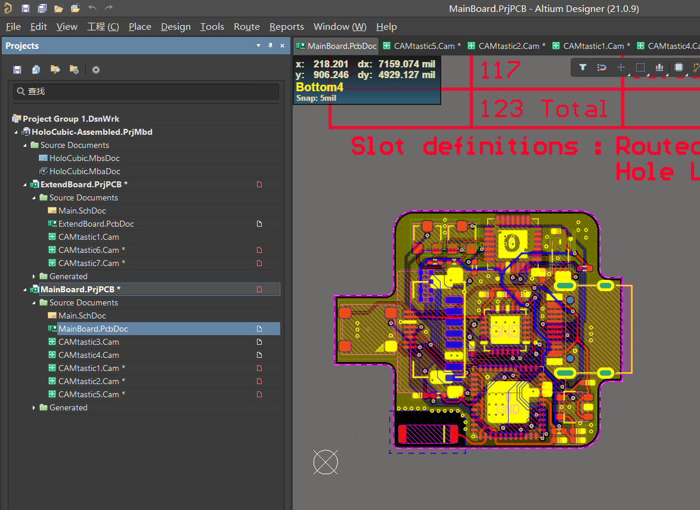
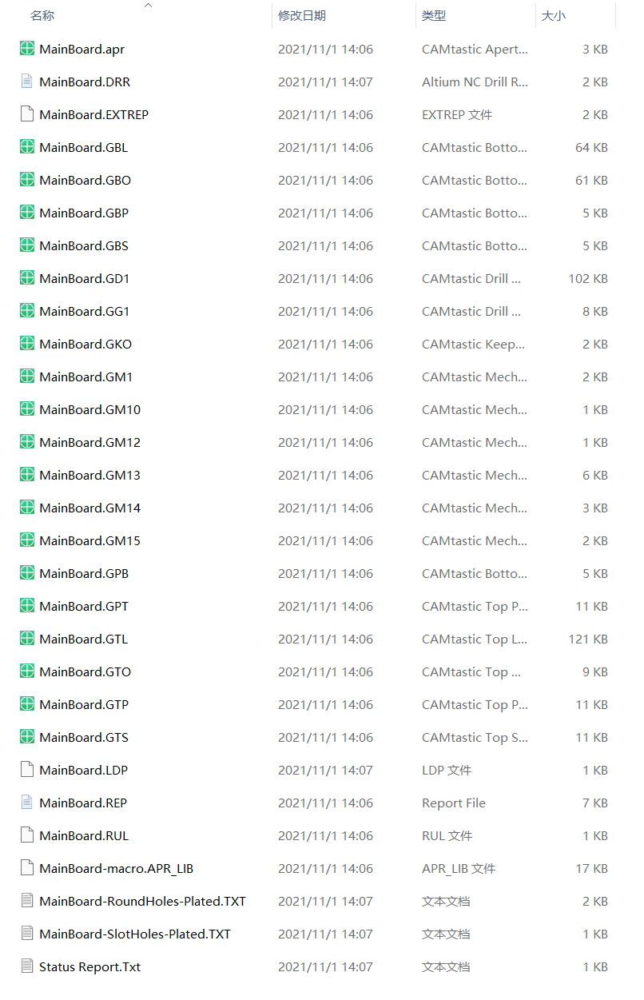
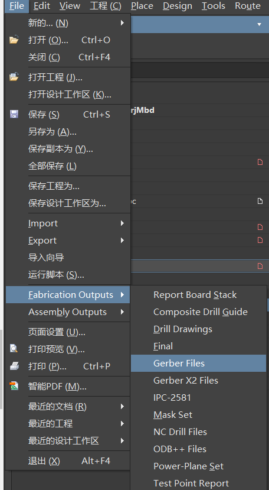
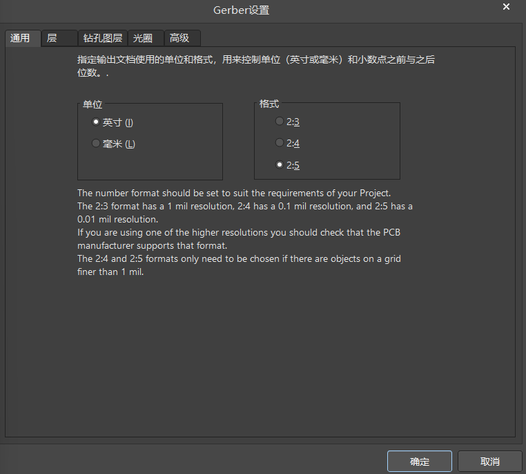
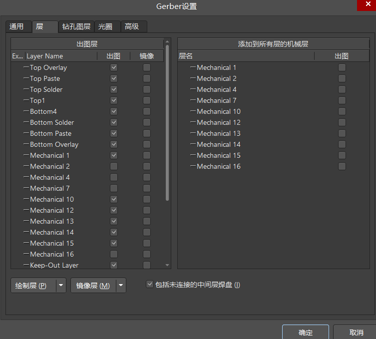
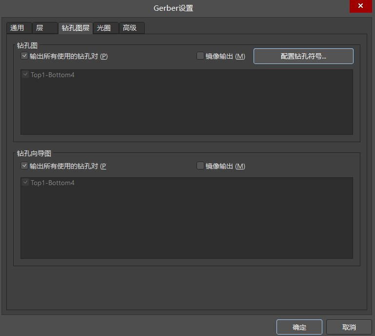
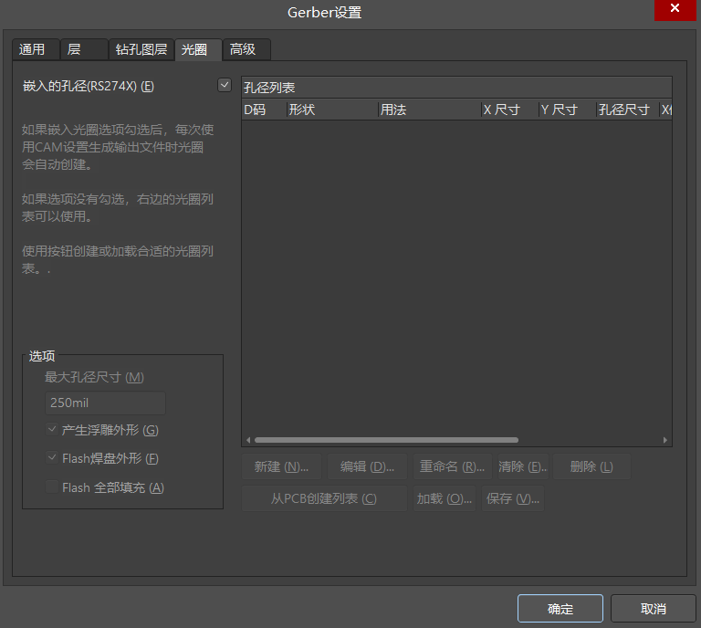
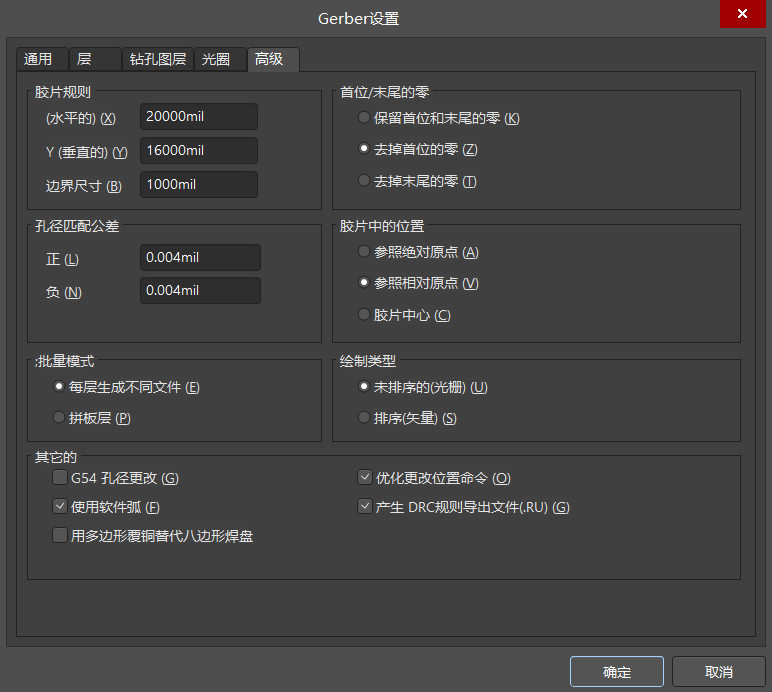
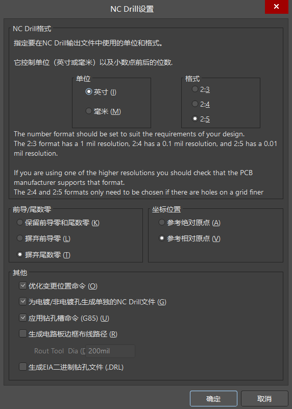
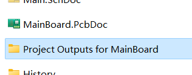

HoloCubic打样(1)——导出Gerber文件
纪念一下自己纯粹出于兴趣做的这个小项目，今天走出了万里长征第一步，把稚晖君设计出来的板子成功送加工啦！
这里记录一下自己的学习过程。
打开并加载PcbDoc文件
因为稚晖君的电路板是使用一款名为Altium Designer的软件设计出来的，所以首先就应该下载这款软件。第一步并不难，只要稍微搜索一下资源，然后按照网上的要求，下载安装这个软件就好了。不同的软件版本会有不一样的界面，不过不是很影响实际的体验，我安装的Altium Designer是21.0.9版本的。
由于软件本体并不是一个免费文件，所以需要在安装软件的时候稍微费一番心思，安装软件的过程这里就不讲解了，嘻嘻。
软件安装好之后，双击Hardware文件夹中的MainBoard.PcbDoc文件就可以看到电路板文件了。下面就是打开之后的效果。

如何把pcb文件交给店家加工
如果去找店家加工电路板，店家一般会要求提供电路板的Gerber文件，新手第一次听说Gerber文件的时候都会懵逼（没错我就懵了）。
这里贴一下Gerber文件的简单介绍：
Gerber是一种二维矢量图像文件格式。它是印刷线路板行业软件中用于描述印刷线路板图像的标准格式，例如：线路层，阻焊层，字符层，钻孔层等。
Gerber文件就像下面图片里显示的一样，会包含很多小文件。

使用Altium Designer自带的功能就可以完成Gerber文件的导出，我参考这篇文章的方法，导出了Gerber文件：Altium Designer如何生成Gerber文件_睿思派克-CSDN博客_ad生成gerber文件
emmm，再贴一遍自己操作的图片🤣
STEP 1 打开 file - Fabrication Outputs - Gerber Files

STEP 2 —— 完成相关设置
这个地方很简单，就不说太多了。
在“General”(通用)选项 里面，“Units”（单位）选择“Inches”（英寸），Format（格式）选择2:5 ，这个尺寸精度比较高。

在“Layers”（层）里面，选中“Include unconnected mid-layer pads”（包括未连接的中间层焊盘），在“Plot Layers”（绘制层）下拉菜单里面选择“Used On”（选择使用的），要检查一下，不要丢掉层。在“Mirror layers”（镜像层） 下拉菜单里面选择 “All Off”（全部去掉），右边的机械层都不要选。
在 “Drill Drawing”（钻孔图层）里面，设置分孔图层参数，选择你要导出的层对。一般选择“Plot all used layer pairs”（输出所有使用的钻孔对），“Mirror plots”（镜像输出）不用选中。Drill Drawing plots（钻孔图） 和 Drill Guide Plots（钻孔导向图）做同样的选择。
在 “Apertures”（光圈）里面，打勾选中“Embeded apertures(RS274X) ”（嵌入的孔径(RS274)），内含D码格式。
在“Advanced”（高级）里面，在“Leading/Trailing Zeroes” （首位/末尾的零）区域，选中“Suppress leading zeroes”（去掉首位的零）。默认情况下设计是圆弧的线转出去仍然上是圆弧，如将Other栏下的“Use software arcs”（使用软件弧）打勾，则设计的圆弧会用线段来代替。
在PCB文件环境中，左键点击 File -> Fabrication Outputs -> NC Drill Files，进入NC Drill Setup 界面，Units选择“Inches”，Format选择2:5 。 在“Leading/Trailing Zeroes” 区域，选中“Suppress trailing zeroes”，和之前Gerber Setup 的“Advanced”里面要保持一致，其他默认选项不变。
Gerber文件会被输出到PcbDoc同文件夹下的Output文件夹里。把这个文件夹打包发给淘宝客服就可以了。